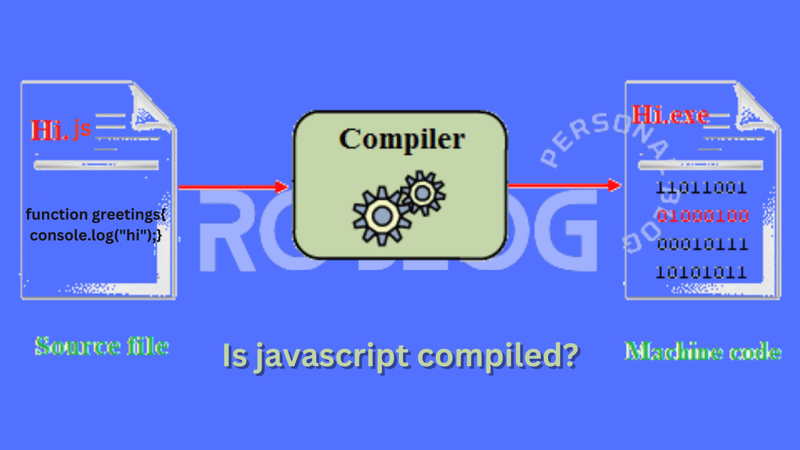

JavaScript (JS) is a light-weight object-oriented programming language
which is used by several websites for scripting the webpages.
JavaScript (JS) is a light-weight object-oriented programming language
which is used by several websites for scripting the webpages.
JavaScript (JS) is a light-weight object-oriented programming language
which is used by several websites for scripting the webpages.
 JavaScript is not a compiled language, but it is a translated language. The JavaScript Translator (embedded in the browser) is responsible for translating the JavaScript code for the web browser.
It enables dynamic interactivity on websites when applied to an HTML document.
With JavaScript, users can build modern web applications to interact directly without reloading the page every time.